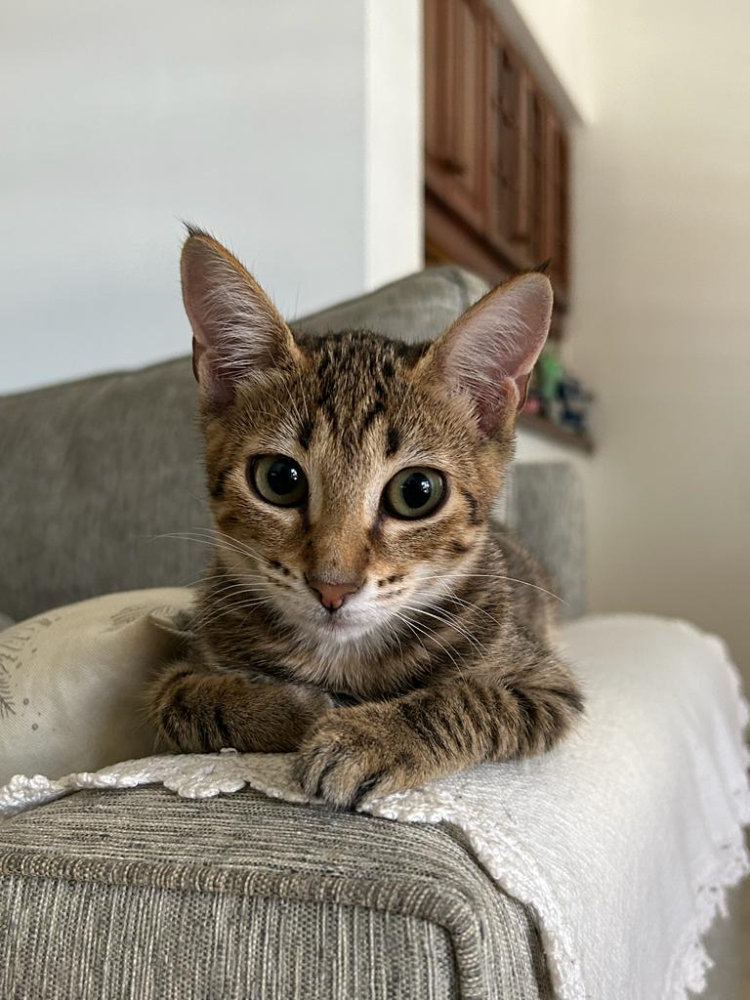
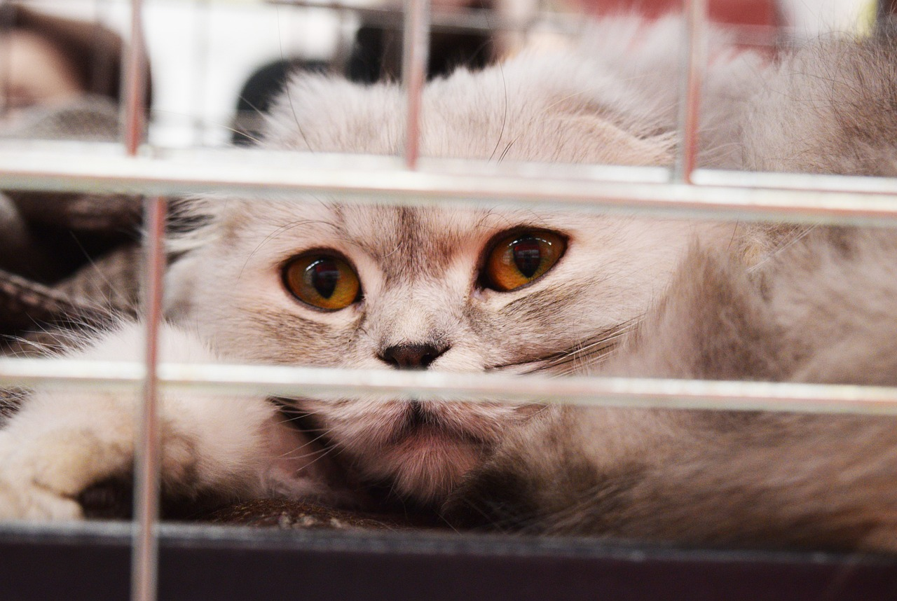

Nuestra Misión
Somos un equipo de personas, autoconvocadas y responsables que abrimos este espacio para lograr que ninguna mascota este sin una familia.

Mascota Adoptada!
IPA ya se encuentra con su familia, dejo el hogar de transito con su transportadora y su carnet sanitario, en perfecto estado de salud y feliz por conocer su nuevo hogar.

Nuevo ingreso!
Ayer resctatamos a Flopy, es una gatita adulta de 2 años que se encuentra en apodcion responsable. Es muy cariñosa y sabe utilizar las piedrias sanitarias. Ya tuvo su visita al veterinario para revision de cualquier enfermedad, aplicacion de inyeccion y pulguicida. Esta disponible para encontrar su nueva familia, no dejes de escribirnos!